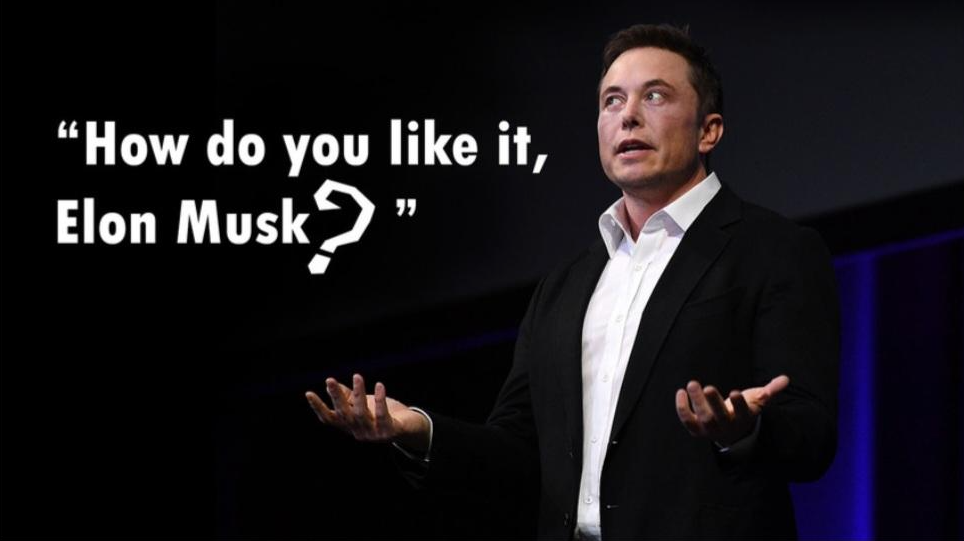

ASSET
Presentation
Why education is the most valuable asset
Press play, then let’s find out why.
Can’t see the video? Open on YouTube ↗
Education✦Asset✦Future✦Education✦Asset✦Future✦
Education✦Asset✦Future✦Education✦Asset✦Future✦
Imagine
What would our world look like without education?
01
Argument 01
Education builds a strong and resilient economy
Higher education creates a flexible and crisis-resistant national economy.
02
Argument 02
Education provides a system, not chaos
Higher education teaches people how to organize information into a clear system instead of consuming random facts.
03
Argument 03
Education as a social elevator: from background to breakthrough
Quality education reduces social inequality by working as a powerful social elevator for talented youth.
Education✦Asset✦Future✦Education✦Asset✦Future✦
Education✦Asset✦Future✦Education✦Asset✦Future✦
Knowledge✦Growth✦Opportunity✦Knowledge✦Growth✦Opportunity✦
Knowledge✦Growth✦Opportunity✦Knowledge✦Growth✦Opportunity✦

To sum up
- 01A strong economy
- 02An organized mind
- 03A fair social elevator
By supporting education today, we create a successful future for everyone.
Thank you.